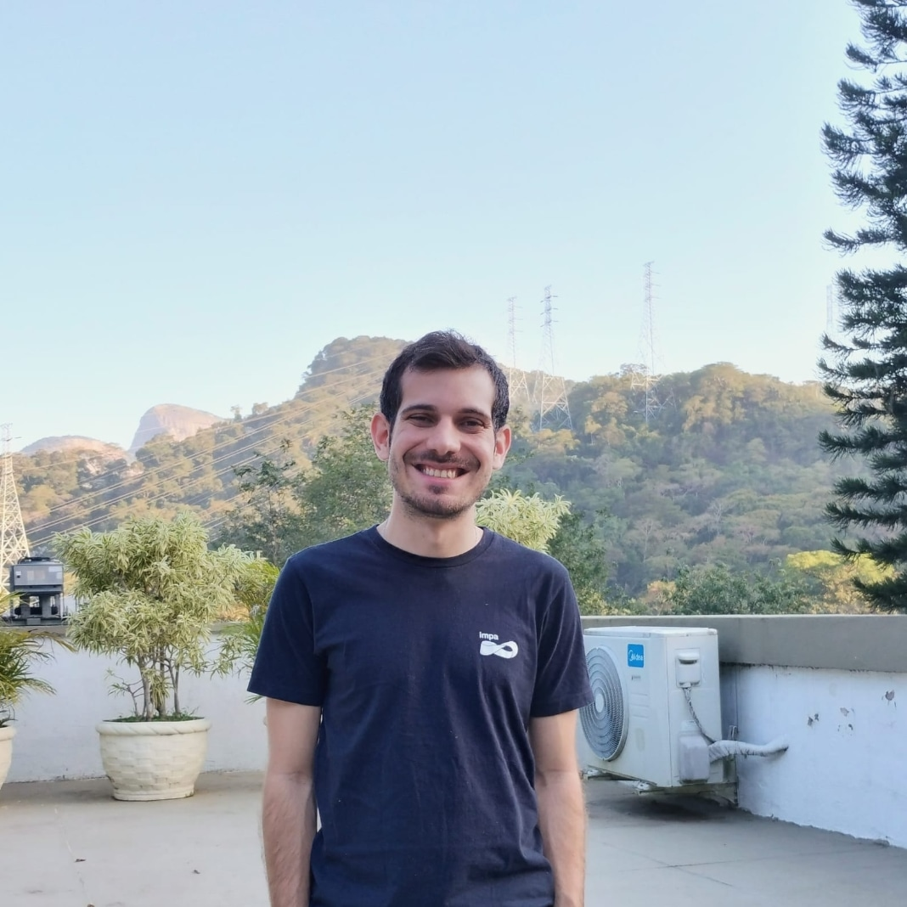

Heric Corrêa
Dynamical Systems • Ergodic Theory • Geometry & Topology
About Me
I am PhD candidate at IMPA under the guidance of Alejandro Kocsard with broad interests in Dynamical Systems, Low-dimensional Topology and Geometry, and Ergodic Theory.
Previously, I obtained my master's degree from the Universidade Federal do Rio de Janeiro (UFRJ), where I worked with Katrin Gelfert, and my bachelor's degree from the Universidade Federal de Minas Gerais (UFMG).

Research
Preprints:
-
"Polynomial Entropy and Rotation sets for Torus Endomorphisms"
Heric Corrêa, Permanent Preprint, 2025. [PDF]
Undergraduate Research Papers (In Portuguese):
Ensino
Below is a directory of my current and past courses (all of them in Portuguese until now). Course materials, syllabi, and problem sets can be found on their respective pages.
-
Calculus I - Spring 2026
Course Webpage | -
Linear Algebra - Fall 2025
Course Webpage | Google Drive (Archived Notes)
Conferences etc
- Founding member of "Math for Everyone" workshops.
- Speaker at the 2025 High School Math Olympiad.
Contact
Email: heric.silva@impa.br
Office: Room 427, 4th floor IMPA
Links: Google Scholar | GitHub